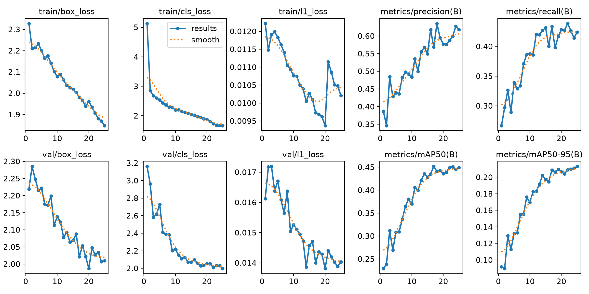
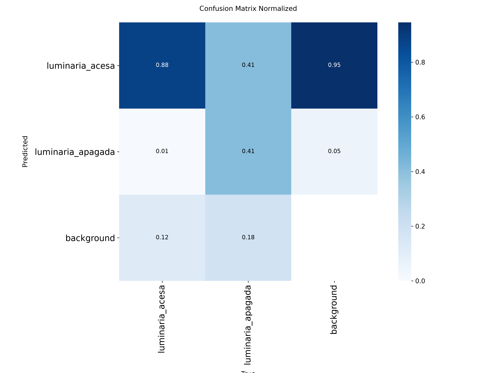
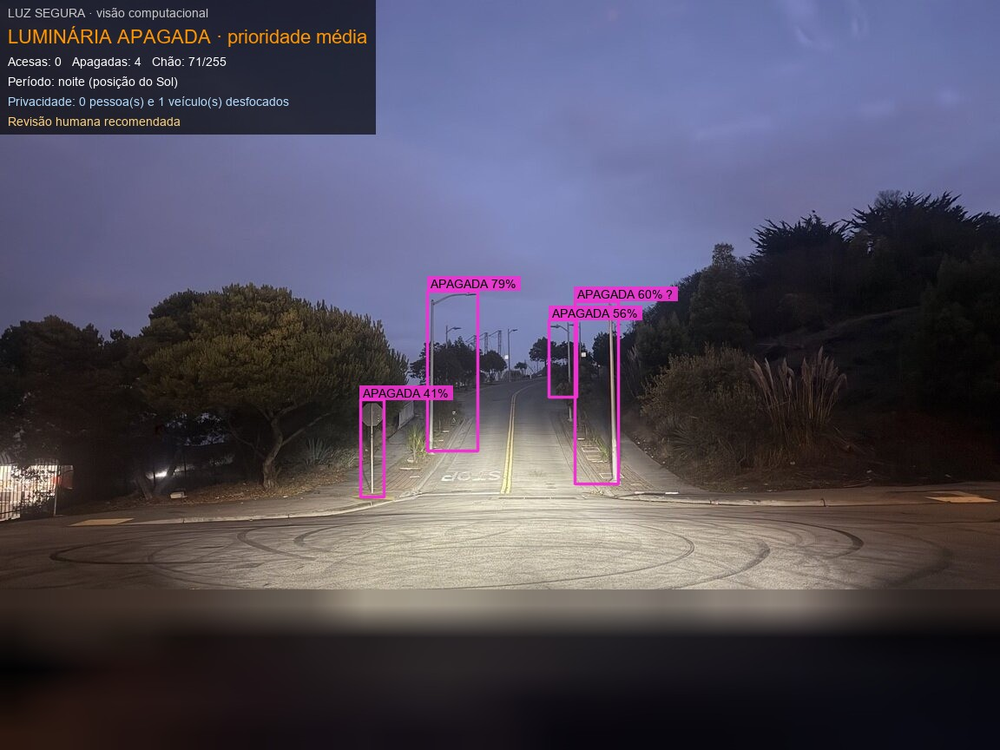
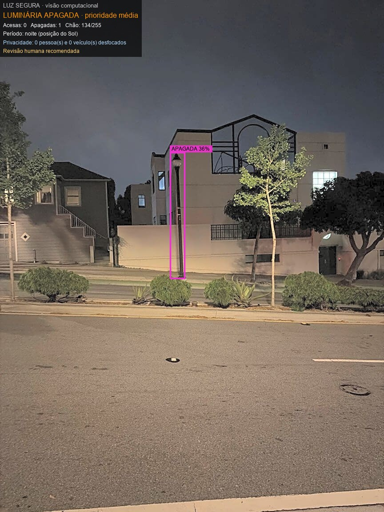
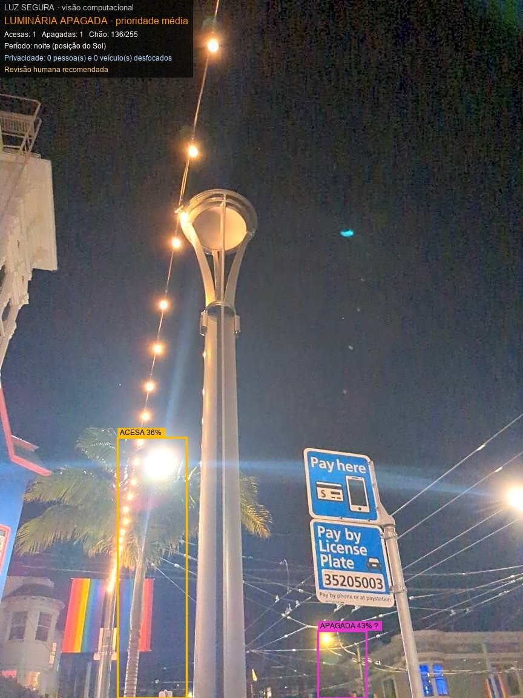
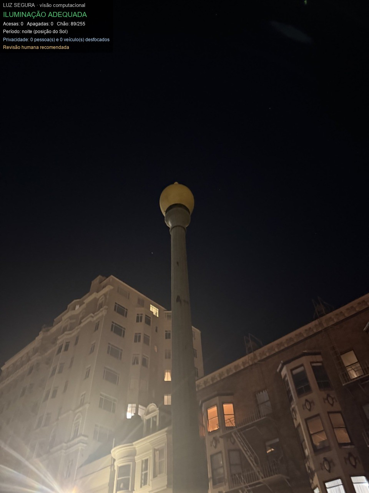
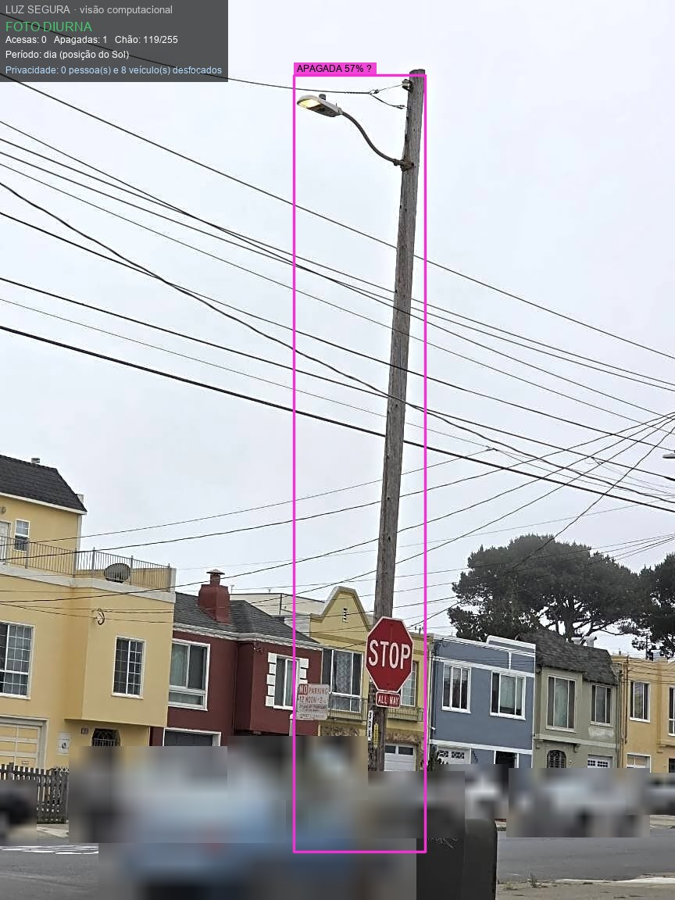
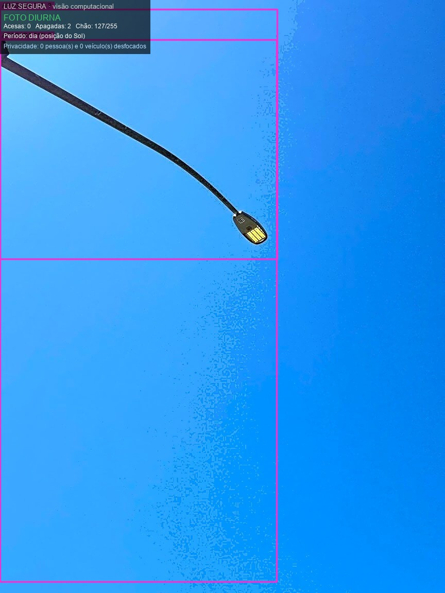
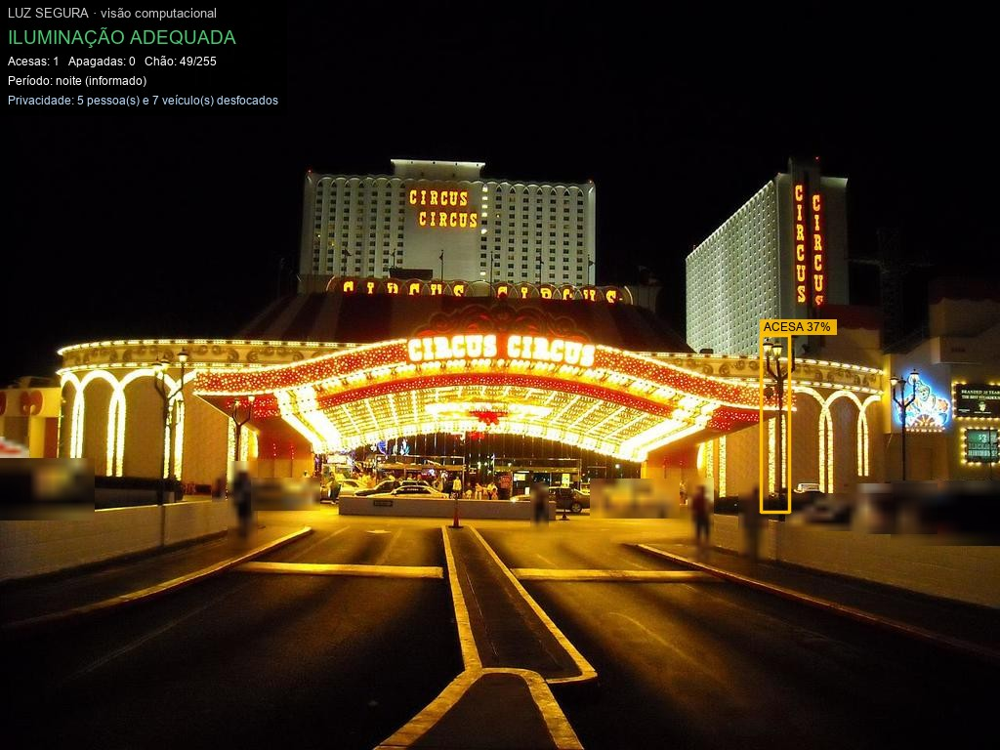
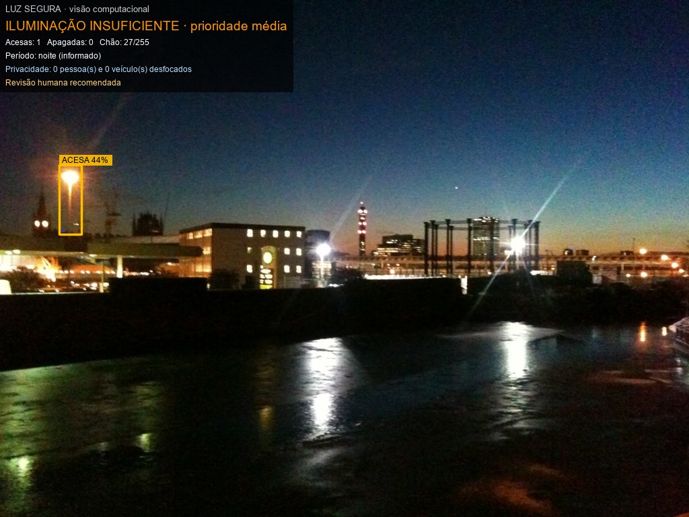

| Arthur Bessa Pian | RM99215 |
| Davi Almeida Desenzi | RM550849 |
| Fabrício Gutierrez Saavedra | RM97631 |
| João Victor Soares | RM551410 |
| Márcio Gastaldi de Oliveira Soares | RM98811 |
Luminárias apagadas deixam calçadas e pontos de ônibus escuros e expõem quem anda a pé à noite; a prefeitura só descobre a falha por reclamações mal localizadas. O componente de visão computacional do Luz Segura recebe uma foto ou vídeo noturno, encontra cada luminária, diz se está acesa ou apagada e gera um diagnóstico explicável (luminária apagada, iluminação insuficiente, trecho escuro ou adequada) em JSON para o MVP. Treinamos um detector YOLO26n com 2.835 imagens do Open Images, parte delas convertidas em noite simulada, com o estado de cada luminária dado por uma regra de brilho, sem gravação própria. Na inferência, a mesma regra confere cada luminária e a posição do Sol define o período; se os sinais divergem ou não confirmam a falha, há revisão humana. Pessoas e veículos detectados são desfocados; nenhuma foto é guardada. No teste noturno, cujo estado de referência vem da regra de brilho, o detector teve mAP50 de 0,48 nas luminárias acesas (769 instâncias) e 0,26 nas apagadas (22). Em 816 fotos reais de Chennai, o sistema acusou 21,5% das apagadas com precisão de 87,3%; em 398 chamados de luminária queimada do 311 de San Francisco, apontou a falha em 10,6%. Em CPU de 8 threads, o pipeline completo roda a 16–20 quadros por segundo. O sistema é preciso, mas ainda deixa passar a maioria das luminárias apagadas em fotos de celular; os próximos passos são rótulos humanos nesse domínio e captura guiada pelo app.
A iluminação pública é uma das infraestruturas que mais pesam na sensação de segurança de quem anda a pé à noite: trabalhadores de turno, estudantes de cursos noturnos e idosos que dependem do transporte público. Uma luminária queimada em frente a um ponto de ônibus muda a rotina de quem passa por ali, mas raramente é notada pelo poder público com rapidez. O ciclo atual depende do cidadão: alguém percebe, liga ou abre uma solicitação, descreve o local de memória, e a equipe de manutenção recebe registros duplicados, mal localizados e sem prioridade. O Luz Segura, CitizenTech desenvolvida pela equipe na Global Solution 2026, ataca esse ciclo em sete componentes integrados; este relatório trata do componente de visão computacional, responsável por "enxergar o problema por imagens e transformar o que vê em informação".
Câmeras já são usadas para monitorar iluminação pública. O MIT, em parceria com a Ferrovial, mostrou em 2016 que câmeras e sensores montados em veículos conseguem mapear luminárias com defeito ao percorrer a cidade [7]; o projeto UMBRELLA, no Reino Unido, publicou imagens de câmeras instaladas nos próprios postes para monitorar se a lâmpada está acesa [8]; e trabalhos recentes aplicam detectores da família YOLO a vídeos noturnos de câmeras veiculares [9]. No Brasil, prefeituras como a de São José dos Campos já usam inteligência artificial na zeladoria urbana [10]. Nossa contribuição é juntar três ideias em um componente pequeno o bastante para rodar só com CPU, sem placa de vídeo: (1) um detector treinado para separar luminária acesa de apagada, (2) uma verificação física complementar, baseada no brilho da própria imagem e na posição do Sol, que explica cada decisão e aciona revisão humana quando há dúvida, e (3) privacidade por padrão: pessoas e veículos detectados pelo filtro são desfocados antes da exibição (à noite ou em ângulos incomuns, algum pode escapar), e o sistema não guarda as fotos (seção 3.4).
Uma restrição definiu o projeto: nenhuma foto ou vídeo foi gravado pela equipe. Todos os dados vêm de fontes públicas ou foram simulados com geração documentada, como o briefing da GS permite; as fontes têm licença aberta, exceto o dataset de Chennai, que não declara licença e por isso entra só nas métricas, com citação, sem ser redistribuído nem exibido.
Treinar e avaliar um detector de objetos que identifique luminárias públicas acesas e apagadas em fotos e vídeos noturnos e, combinado à medição de brilho e à posição do Sol, gere em CPU um diagnóstico explicável e anonimizado para o MVP Luz Segura.
Detectores de um estágio da família YOLO preveem, em uma única passada da rede, a caixa, a classe e a confiança de cada objeto. Usamos
o YOLO26n, a versão nano da geração YOLO26 da biblioteca Ultralytics [1]: cerca de 2,4 milhões de parâmetros e 5,4 GFLOPs, com
cabeça de detecção de ponta a ponta, que dispensa a etapa de supressão de não máximos (NMS) na inferência e por isso é
especialmente rápida em CPU. Partimos dos pesos pré-treinados no COCO (aprendizado por transferência) e substituímos a cabeça por duas
classes: luminaria_acesa e luminaria_apagada. É o "treinamento customizado de uma arquitetura compatível com o
problema" pedido na atividade: o problema pede um modelo leve, que rode só com CPU, sem placa de vídeo. Medimos a velocidade num
computador de mesa (seção 5.3); celulares e computadores de bordo de ônibus seriam alvos naturais, mas não foram testados.
Para cada caixa detectada, medimos o brilho (luma BT.601, de 0 a 255) com OpenCV, numa cópia da imagem reduzida a
1024 px no lado maior, a resolução em que a regra foi calibrada. Uma luminária acesa contém uma mancha contígua de
pixels saturados (≥ 235, com pelo menos 6 pixels), encontrada por rotulagem de componentes
conectados; uma luminária apagada não tem essa mancha e não é mais clara que o anel ao redor dela (contraste
≤ 1,15). É a mesma regra que definiu o estado das luminárias nos rótulos de treino (seção 4, passo 2):
reaplicada à caixa prevista, ela não é um juiz independente do modelo, mas aponta contradições, como uma luminária prevista como
apagada que mostra uma mancha de luz saturada. O brilho médio da faixa inferior da imagem (40%, onde ficam
calçada e rua) indica se o chão está escuro. Como o modo noturno dos celulares clareia fotos tiradas à noite, o período (dia,
transição ou noite) é decidido pela altura do Sol, calculada com o algoritmo da NOAA [6] a partir do horário e do local da captura; o
horário precisa trazer o fuso, e sem ele a análise é recusada, para não trocar dia por noite. Só na falta de horário e local usamos o
brilho da cena como estimativa, e então nenhum chamado é aberto sem revisão humana. O período também pode ser informado por quem envia
a imagem (periodo na API, o campo Período no app e --periodo na linha de comando) e, nesse caso, prevalece
sobre o Sol e o brilho; foi assim em Chennai, cujas fotos não têm horário nem local, nos vídeos noturnos (seção 5.4) e nos exemplos do
Open Images (seção 5.5).
Em vídeo, cada luminária recebe um identificador estável com o ByteTrack [5], que associa detecções entre quadros. O estado final de cada luminária é a votação dos quadros em que ela aparece, o que permite contar luminárias distintas acesas e apagadas em um trajeto, em vez de contar a mesma luminária várias vezes.
Um segundo YOLO26n, sem treino adicional, localiza pessoas, bicicletas, motos, carros, ônibus e caminhões; cada região detectada é pixelada e desfocada de forma irreversível antes da exibição (em vídeo, o filtro detecta a cada dois quadros e desfoca todos os quadros com as caixas mais recentes). O filtro não é infalível: à noite ou em ângulos incomuns, alguma pessoa ou veículo pode escapar dele. Nada é guardado: a API analisa a foto em memória e não grava nada em disco; a interface web de demonstração mantém os arquivos enviados só no seu cache temporário, apagado em até 20 minutos ou quando o app é fechado, e o último vídeo anotado, já anonimizado, fica numa pasta temporária até a próxima análise de vídeo ou até o app ser fechado. Desfocar pessoas e veículos e não guardar imagens segue o princípio da necessidade da LGPD [11], que limita o tratamento de dados pessoais ao mínimo necessário para a finalidade.
| Ferramenta | Versão | Uso no projeto |
|---|---|---|
| Python | 3.12.10 | linguagem de todo o componente |
| Ultralytics | 8.4.215 | treino, validação, exportação e rastreamento do YOLO26n |
| PyTorch (CPU) | 2.15.0 | treino da rede neural em CPU |
| ONNX Runtime | 1.32.0 | inferência opcional do detector exportado para ONNX (seção 5.3) |
| OpenCV | 5.1.0 | leitura de imagens e vídeos, medição de brilho, componentes conectados |
| Pillow | 13.0.0 | desenho do painel com acentuação |
| FastAPI e Uvicorn | 0.163 / 0.54 | API REST com o contrato JSON consumido pelo MVP |
| Gradio | 6.32.0 | interface web de demonstração (foto e vídeo) |
| imageio-ffmpeg | 0.8.1 | gravação dos vídeos anotados em H.264 |
| pytest | 9.2.0 | testes automatizados (regras, contrato, privacidade e API) |
O IoU (interseção sobre união) mede a sobreposição de duas caixas: a área da interseção entre a caixa prevista e a de referência dividida pela área da união das duas. Uma previsão é um verdadeiro positivo (VP) quando tem a classe certa e IoU ≥ 0,5 com uma caixa de referência ainda sem par; a previsão sem par é um falso positivo (FP), e a caixa de referência que nenhuma previsão encontrou é um falso negativo (FN). A precisão, VP/(VP + FP), é a fração das previsões que estão certas; a revocação, VP/(VP + FN), é a fração das luminárias de referência encontradas; o F1 é a média harmônica das duas, 2 × precisão × revocação/(precisão + revocação). Variando o limiar de confiança, precisão e revocação traçam uma curva, e a área sob ela é a precisão média (AP) da classe. O mAP50 é a média do AP das classes com IoU mínimo de 0,5; o mAP50-95 é a média do AP com IoU mínimo de 0,50 a 0,95, em passos de 0,05, e por isso também cobra caixas bem ajustadas. Na avaliação de ponta a ponta (Tabela 3), as mesmas contas valem por foto: VP é uma foto com defeito em que o sistema acusou luminária apagada; FP, uma foto de luminária funcionando em que ele acusou; FN, uma foto com defeito em que ele não acusou; e VN (verdadeiro negativo), uma foto de luminária funcionando em que ele não acusou.
data/manifests/; esses
manifestos registram a origem e o rótulo de cada imagem e vídeo usados, na linha das datasheets para conjuntos de dados [14].
Para testes independentes usamos 816 fotos do dataset de Chennai [3] (luminárias funcionando e com defeito, fotografadas ao
anoitecer) e 458 fotos de chamados reais do serviço 311 de San Francisco [4] (398 noturnos
de luminária queimada e 60 diurnos de luminária acesa o tempo todo). Antes, tiramos desses conjuntos as fotos repetidas (mesmo conteúdo): 4 cópias saíram, ficando uma de cada, e 4 fotos que apareciam com rótulos contraditórios foram descartadas (registro em data/manifests/duplicatas_removidas.csv).scripts/dados/montar_dataset_v2.py e --com-v2 em scripts/reproduzir.py).Tabela 1. Composição do dataset (imagens e caixas por classe).
| Divisão | Grupo | Imagens | Caixas acesas | Caixas apagadas |
|---|---|---|---|---|
| Treino | Anoitecer real | 765 | 1.768 | 544 |
| Treino | Dia real | 270 | 0 | 1.065 |
| Treino | Noite real | 1.215 | 3.368 | 55 |
| Treino | Noite simulada (de fotos diurnas) | 585 | 0 | 2.017 |
| Validação | Anoitecer real | 85 | 192 | 69 |
| Validação | Dia real | 30 | 0 | 119 |
| Validação | Noite real | 135 | 335 | 6 |
| Validação | Noite simulada (de fotos diurnas) | 65 | 0 | 251 |
| Teste | Anoitecer real | 15 | 34 | 14 |
| Teste | Anoitecer real (reservado antes do treino) | 150 | 256 | 206 |
| Teste | Dia real | 79 | 0 | 255 |
| Teste | Noite real | 30 | 70 | 0 |
| Teste | Noite real (reservado antes do treino) | 250 | 699 | 22 |
| Treino (total) | 2.835 | 5.136 | 3.681 | |
| Validação (total) | 315 | 527 | 445 | |
| Teste (total) | 524 | 1.059 | 497 |
Os resultados das seções 5.1 a 5.5 são do modelo v1: pesos models/luzsegura_yolo26n_v1.pt, publicados como models/luzsegura_yolo26n.pt (SHA-256 2d0bcbcc94e6dce4…).
Tabela 2. Métricas do detector em imagens nunca vistas no treino (IoU 0,5 para mAP50; média de IoU 0,5 a 0,95 para mAP50-95; definições na seção 3.6). Precisão e revocação de cada classe no ponto de operação do sistema (confiança ≥ 0,30); instâncias são as caixas de referência de cada classe. À noite e ao anoitecer, o estado de referência de cada caixa vem da própria regra de brilho (seção 3.2), e as imagens com qualquer caixa indefinida ficaram fora do treino e também do teste (443 das 3.166 imagens noturnas e 777 das 3.782 de anoitecer do Open Images): essas linhas medem o quanto o modelo reproduz a regra; as Tabelas 3 e 4 avaliam com rótulos que não vêm dela. De dia, toda luminária foi rotulada apagada; na linha Dia, a coluna da classe acesa conta as detecções de luminária acesa, que esse rótulo trata como erro.
| Conjunto | Imagens | Instâncias (acesa / apagada) | Acesa: precisão / revocação | Apagada: precisão / revocação | mAP50 acesa | mAP50 apagada | mAP50 | mAP50-95 |
|---|---|---|---|---|---|---|---|---|
| Teste completo | 524 | 1.059 / 497 | 0,617 / 0,433 | 0,613 / 0,372 | 0,463 | 0,419 | 0,441 | 0,216 |
| Noite | 280 | 769 / 22 | 0,644 / 0,453 | 0,417 / 0,227 | 0,481 | 0,259 | 0,370 | 0,164 |
| Anoitecer | 165 | 290 / 220 | 0,587 / 0,372 | 0,628 / 0,323 | 0,435 | 0,355 | 0,395 | 0,184 |
| Dia | 79 | 0 / 255 | sem referência: 10 detecções em 7 imagens | 0,624 / 0,435 | – | 0,498 | 0,498 | 0,306 |


No teste reservado (524 imagens nunca usadas no treino), o detector chegou a mAP50 de 0,441 e mAP50-95 de 0,216, valores próximos aos da validação (0,449 e 0,213): o modelo não se ajustou demais às imagens de validação. No ponto de operação do sistema, com confiança mínima de 0,30, cerca de seis em cada dez caixas previstas estão certas (precisão de 0,62 na classe acesa e de 0,61 na apagada), e o detector encontra 43% das luminárias acesas e 37% das apagadas. As curvas de treino (Figura 1) mostram as perdas ainda caindo e o mAP50 de validação estável desde a 17ª época: mais épocas trariam pouco ganho.
O desempenho muda com o período. De dia, o modelo localiza bem as luminárias (mAP50 de 0,498, todas rotuladas como apagadas) e marcou só 10 caixas como acesas, em 7 das 79 imagens. À noite, a luminária acesa é a classe mais fácil (mAP50 de 0,481), e o ponto fraco é a luminária apagada: mAP50 de 0,259 e revocação de 23%, medidos em apenas 22 caixas, porque luminárias apagadas à noite são raras nas fotos públicas. A matriz de confusão noturna (Figura 2), que conta todas as detecções com confiança acima de 0,001 e não só as do ponto de operação, mostra o tipo de erro: das luminárias apagadas à noite, 41% saem como apagadas, 41% são confundidas com acesas e 18% não são detectadas, enquanto as acesas saem certas em 88% dos casos. Ao anoitecer, com 220 caixas apagadas, o mAP50 da classe apagada é 0,355.
Tabela 3. Dataset de Chennai (816 fotos ao anoitecer: 527 luminárias funcionando e 289 com defeito; rótulo do próprio dataset). Como as fotos não têm horário nem local, o período foi informado como noite; com o período estimado só pelo brilho, toda luminária apagada iria para revisão humana e nenhum chamado seria automático.
| Decisão | VP | FP | FN | VN | Precisão | Revocação | F1 |
|---|---|---|---|---|---|---|---|
| Só o modelo (classe apagada) | 62 | 9 | 227 | 518 | 87,3% | 21,5% | 0,344 |
| Só a regra de brilho | 25 | 4 | 264 | 523 | 86,2% | 8,7% | 0,157 |
| Sistema (modelo conferido pelo brilho) | 62 | 9 | 227 | 518 | 87,3% | 21,5% | 0,344 |
| Chamado automático (sem revisão) | 8 | 0 | 281 | 527 | 100,0% | 2,8% | 0,054 |
Entre as 527 fotos de luminárias funcionando, 23,7% receberam um diagnóstico pelo chão (iluminação insuficiente ou trecho escuro), que sempre vai para revisão humana: nessas fotos, tiradas de perto e apontadas para o poste, a faixa inferior costuma mostrar céu ou fachada, e não a calçada.
Nas 816 fotos de Chennai (527 de luminárias funcionando e 289 com defeito), o sistema apontou luminária apagada em 71 e acertou 62: precisão de 87,3%. A revocação, porém, é de 21,5%, porque em 227 das 289 fotos com defeito nenhuma luminária apagada foi detectada (F1 de 0,34). Como as fotos não têm horário nem local, o período foi informado como noite. O sistema e o modelo sozinho têm os mesmos números: à noite, o diagnóstico de luminária apagada vem da detecção, e a regra de brilho não muda o diagnóstico, só decide se o caso vai para revisão. Aplicada sozinha às caixas do detector, a regra de brilho encontraria só 8,7% das falhas, com precisão parecida (86,2%).
O chamado automático, sem revisão humana, saiu em 8 fotos, todas certas, mas cobre só 2,8% das falhas. As outras 63 fotos com luminária apagada foram para revisão: em 48 o brilho não confirmou a falha, em 41 a confiança ficou abaixo de 0,55 e em 1 o brilho contradisse uma das duas luminárias apagadas (uma foto pode ter mais de um motivo). Para um sistema que gera ordens de serviço, é o comportamento desejado: quando aponta uma falha com evidência fraca, ele pede revisão em vez de abrir o chamado.
Das 610 fotos com iluminação adequada, 269 foram para revisão, 263 delas porque nenhuma luminária foi encontrada e o resultado viria só do brilho do chão. Nas outras 341, o sistema encontrou luminárias acesas e encerraria o relato sem revisão; 82 delas são de luminárias com defeito, falhas que passam despercebidas.
Tabela 4. Diagnóstico do sistema para 398 chamados noturnos reais de luminária queimada (San Francisco 311). O período foi calculado pela posição do Sol no horário e no local de cada chamado. Chamado automático de luminária apagada, sem revisão humana: 0,0%. Um chamado (0,3%) virou chamado automático de outro tipo, luminária acesa durante o dia: no horário do chamado, o Sol estava a pelo menos 8° acima do horizonte, e o brilho confirmou uma luminária acesa na foto.
| Diagnóstico do sistema | Chamados | % |
|---|---|---|
| iluminação adequada | 323 | 81,2% |
| luminária apagada | 42 | 10,6% |
| trecho escuro | 15 | 3,8% |
| iluminação insuficiente | 11 | 2,8% |
| fora do período noturno | 5 | 1,3% |
| acesa durante o dia | 2 | 0,5% |
Nos 60 chamados diurnos de luminária acesa o tempo todo (mesma fonte), o sistema apontou luminária acesa durante o dia em 5,0% das fotos.
Nos 398 chamados noturnos reais de luminária queimada do SF 311, o sistema apontou luminária apagada em 42 (10,6%), todas com revisão humana (nenhum chamado automático de luminária apagada), e o detector encontrou alguma luminária em 55% das fotos. Em 165 fotos (41,5%), ele não encontrou nenhuma: o resultado seria iluminação adequada pelo brilho do chão, mas o sistema não encerra esses relatos e pede revisão humana. O ponto cego são as 155 fotos (38,9%) em que ele só encontrou luminárias acesas, com o chão claro: a resposta é iluminação adequada sem revisão, e a luminária queimada passa despercebida. Para entender o resultado, inspecionamos uma amostra aleatória de 40 fotos: 35 foram feitas à noite, quase todas no modo noturno do celular, que clareia a cena; 3 ao anoitecer e 2 de dia. Muitas enquadram o poste de baixo para cima ou de muito perto, às vezes só a placa com o número do poste ou um semáforo, e a luminária queimada aparece escura ao lado de outras acesas. É um domínio diferente das fotos do Open Images usadas no treino, e o caso mais difícil para o modelo, a luminária apagada à noite, é justamente o desses chamados.
Inspecionamos também, uma a uma, as 42 fotos em que o sistema apontou luminária apagada. Em 11 delas (cerca de um quarto), a foto foi feita de dia ou é uma captura de tela de mapa ou do Street View, anexada a um chamado aberto à noite: a luminária está desligada porque é dia, e o sistema só a tratou como falha porque o período veio do horário do chamado, e não da foto. Nas demais, em geral a caixa está numa luminária escura à noite, mas há casos em que ela marca outra luminária, e parte deles a regra de brilho contradiz e manda para revisão. Por isso, no app do Luz Segura o horário deve vir da própria foto (metadados EXIF), e não do envio. As Figuras 3 e 4 mostram dois acertos, a Figura 5 um caso de revisão por contradição e a Figura 6 uma luminária apagada que o sistema não encontrou.
A posição do Sol funcionou como esperado. Pelo horário e pelo local dos chamados, 7 dos noturnos foram abertos com o Sol ainda acima do horizonte (entre 19h e 20h, de maio a agosto, quando os dias são longos em San Francisco) e 9 na transição. Nos 60 chamados diurnos de luminária acesa o tempo todo, o modelo viu alguma luminária classificada como apagada em 29, mas o sistema não apontou nenhuma falha, porque o Sol estava alto. O outro lado é fraco: o diagnóstico de luminária acesa durante o dia reconheceu só 3 desses 60 chamados (5%); nos outros 57, a resposta foi foto diurna, que pede ao cidadão uma nova foto depois do pôr do sol. A causa está no rótulo: no treino, toda luminária de dia foi rotulada como apagada, e o modelo chama de apagada até a luminária acesa de dia, como nas Figuras 7 e 8.
| Configuração (CPU AMD Ryzen 7 5700X3D de computador de mesa, 8 threads, quadros 1280×720) | Quadros por segundo |
|---|---|
| Detector em PyTorch | 35,0 |
| Detector em ONNX Runtime | 45,8 |
| Pipeline completo em PyTorch (detector + brilho + filtro de privacidade) | 15,8 |
| Pipeline completo com o detector em ONNX Runtime (filtro de privacidade em PyTorch) | 13,4 |
Medido em 120 quadros do vídeo sao_paulo_00023.mp4 (a partir de 7 s, depois da cartela de abertura), com o filtro de privacidade em todo quadro (no vídeo anotado ele roda a cada dois quadros). Com o detector em ONNX, o Ultralytics reduz o PyTorch a 2 threads, e o filtro de privacidade, que roda em PyTorch, fica mais lento: por isso os vídeos da demonstração usam os pesos em PyTorch.
Para comparar, os vídeos da seção 5.4 foram gravados a 29,97 quadros por segundo. O detector sozinho passa desse ritmo; o pipeline completo fica em 52,7% dele com o filtro de privacidade em todo quadro e entre 59,4% e 66,1% nos próprios vídeos (17,8 a 19,8 quadros por segundo), com rastreamento, diagnóstico e o filtro a cada dois quadros.
| Vídeo | Local | Duração | Acesas (únicas) | Apagadas (únicas) | Apagadas em revisão humana | Trecho escuro | Quadros/s |
|---|---|---|---|---|---|---|---|
| sao paulo 00023 | São Paulo, SP, Brasil | 35 s | 23 | 2 | 2 | 9 s | 17,8 |
| sao paulo 00024 | São Paulo, SP, Brasil | 52 s | 10 | 0 | 0 | 49 s | 19,8 |
| sao paulo 00027 | São Paulo, SP, Brasil | 30 s | 29 | 0 | 0 | 4 s | 18,5 |
| sao paulo 00031 | São Paulo, SP, Brasil | 30 s | 19 | 0 | 0 | 18 s | 19,2 |
| sao paulo 00032 | São Paulo, SP, Brasil | 30 s | 31 | 0 | 0 | 18 s | 19,0 |
| sao paulo 00035 | São Paulo, SP, Brasil | 30 s | 5 | 0 | 0 | 0 s | 18,6 |
| sao paulo 00036 | São Paulo, SP, Brasil | 31 s | 5 | 0 | 0 | 0 s | 18,6 |
| sao paulo 00038 | São Paulo, SP, Brasil | 30 s | 1 | 0 | 0 | 30 s | 19,2 |
| sao paulo 00045 | São Paulo, SP, Brasil | 30 s | 3 | 0 | 0 | 2 s | 18,0 |
| sao paulo 00056 | São Paulo, SP, Brasil | 26 s | 3 | 0 | 0 | 0 s | 18,4 |
Nos 10 trechos noturnos da região da Avenida Paulista (São Paulo, 2008, domínio público; 5,4 minutos ao todo), o pipeline analisou todos os quadros em CPU, de 17,8 a 19,8 quadros por segundo, de 59% a 66% do ritmo em que os vídeos foram gravados (29,97 quadros/s), com detecção, rastreamento, medição de brilho e desfoque de privacidade; a leitura, o desenho e a gravação do vídeo anotado ficam fora dessa conta, e o detector sozinho passa dos 30 quadros/s (seção 5.3). O rastreador formou 129 trilhas classificadas como acesas, sem gabarito para conferir (incluem faróis de carros), e só 2 apagadas, ambas no mesmo trecho, vistas em apenas 3 quadros e com confiança baixa: as duas foram para revisão humana. Os trechos mal iluminados aparecem como esperado: no clipe 00024, uma via escura, 49 dos 52 segundos ficaram como trecho escuro, e na praça do clipe 00038, cuja única luminária é distante e pequena demais para o detector, o trecho inteiro.
Os vídeos não têm rótulos, então esta parte da avaliação é qualitativa. A contagem depende do rastreamento: uma luminária pequena que o detector perde por mais de 3 segundos pode voltar com outro número. O filtro de privacidade roda a cada dois quadros e, à noite, deixa escapar alguns veículos, como se vê no vídeo de demonstração. Durante os testes, encontramos e corrigimos dois problemas que só apareceram em vídeo: a mesma luminária às vezes saía com duas caixas, uma acesa e outra apagada (o YOLO26 não faz supressão de não máximos entre classes), e o desfoque de um veículo muito perto da câmera derrubava a velocidade para 5 quadros por segundo.
Imagens já anonimizadas pelo próprio sistema (pessoas e veículos detectados pelo filtro foram desfocados). Caixas âmbar: luminária acesa; magenta: apagada. O sinal ? depois da confiança indica que a medição de brilho contradiz a classe prevista. Nas fotos do SF 311, o período vem da posição do Sol no horário e no local do chamado. As fotos do Open Images são do teste reservado, nunca usado no treino; como não têm horário nem local, foram analisadas com o período informado como noite.








Entregamos um componente de visão computacional completo e reproduzível para o Luz Segura, sem gravar nenhuma imagem: um YOLO26n treinado pela equipe para separar luminária acesa de apagada, conferido por uma regra de brilho e pela posição do Sol, que devolve ao MVP um diagnóstico explicável em JSON, com prioridade e revisão humana quando a evidência é fraca ou quando nenhuma luminária é encontrada. O detector passa dos 30 quadros por segundo em CPU, e o pipeline completo, com a anonimização, analisa os vídeos a cerca de 18 quadros por segundo; o componente chega ao MVP por API, interface web e linha de comando.
A avaliação com dados reais mostra o ponto forte e os limites do componente. O sistema é preciso: em Chennai, 87,3% das luminárias apagadas que ele apontou estavam de fato com defeito, e os 8 chamados automáticos, com o período informado como noite, estavam todos certos. Mas ele encontra poucas falhas em fotos de celular: 21% em Chennai e 11% nos chamados reais do SF 311, e quando só encontra luminárias acesas responde iluminação adequada sem revisão (39% dos chamados do SF 311). O gargalo é detectar a luminária apagada à noite, rara nas fotos públicas e que no treino veio sobretudo de noites simuladas; o autotreinamento com fotos de chamados não resolveu, porque só reforça o que o modelo já vê (só 36 de 980 fotos tinham pseudo-rótulos aproveitáveis). O diagnóstico de luminária acesa de dia também é fraco (3 de 60 chamados), porque no treino toda luminária de dia foi rotulada como apagada, e o filtro de privacidade pode deixar escapar algum veículo à noite. Por fim, não há avaliação rotulada no território do projeto: os números de ponta a ponta vêm de Chennai (Índia) e de San Francisco (EUA), e as ruas brasileiras aparecem só nos vídeos de 2008 da Avenida Paulista, sem rótulos.
Os próximos passos são diretos: (1) rotular à mão algumas centenas de fotos reais de luminárias apagadas, tiradas com celular em cidades brasileiras, e rotular as luminárias de dia pelo estado real, e não como apagadas; (2) usar o próprio app para orientar a captura (à noite, com a luminária e a calçada no quadro, e com o horário e a localização da própria foto); (3) combinar evidências, como vários cidadãos apontando o mesmo poste ou a mesma luminária vista em vários quadros de uma ronda em vídeo, antes de abrir o chamado; e (4) manter a revisão humana nos casos duvidosos e acompanhar os erros por região, para que bairros com fotos piores não fiquem sem atendimento. Assim, o componente cumpre o papel pedido no MVP, transformar imagens em informação acionável, de forma explicável, medida e responsável.